Intro to sound and music through basic physics, mathematics, algorithms, fundamental music theory, recorded digital audio, and MIDI
A Study by Jennifer Burg, Jason Romney, and Eric Schwartz
Hannah Luebbering
August 10, 2020
Part 1. Timing in Music
Learning Objectives
Be able to explain the meaning of time signatures 4/4, 3/4, 2/3, and 6/8 time.
Recognize a measure (also called a bar) on a musical score.
Be able to define rhythm.
Be able to define tempo.
Recognize whole, half, quarter, and eighth notes on a musical score, and know their relative time lengths.
Be moderately proficient at recognizing 2/4, 3/4, 4/4, and 6/8 time based on accented beats and groupings of beats.
Recognize a melody and be able to hum along with it.
Time signatures and Measures
Time signatures
Meter is a constant rhythmic pattern for a musical piece defined by…
- how many beats are in a measure
- what type of note gets one beat
On a musical score, meter is denoted in the form of a time signature
time signatures include 2/4, 3/4, 4/4, 6/8, etc…
The numerator is the number of beats per measure. The denominator is the type of note that gets 1 beat.
For example, a 4/4 time signature means
- there are 4 beats per measure
- a quarter note gets 1 beat
- 4 quarter notes in a measure
- 1 half note + 2 quarter notes in another
- 1 whole note in another
Measures
Beats are gathered into groups called measures
is a constant pulse that guides the piece’s movement in time
usually consist of 2, 3, 4, or 6 beats, on a musical score— seperated by vertical lines
Three measures of a musical score with time signature 4/4
First measure has 4 quarter notes
- four quarter notes = four beats
The second measure has 2 quarter notes and 1 half note
- add up to four beats – each quarter note getting one beat and each half note getting two beats
The third measure has 4 beats
- a whole note has four beats in 4/4 time
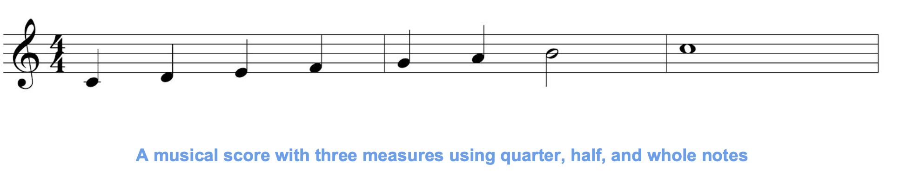
Figure 1. A musical score with three measures using quarter, half, and whole notes
Rhythm and Tempo
Rhythm is…
A systematic arragnement of musical sounds based on the duration and accent of notes
- usually has a pattern
- arises from the pattern of accented and unaccented notes
Rhythm vs. Meter
Once the meter is set for a section of a musical composition, the number of beats per measure must fit within that time signature
Which particular types of rests and notes – whole, half, quarter, eighth, etc. – are chosen to add up to the number of beats per measure is up to the composer
The Morse code
Here’s an example of a simple rhythm, the Morse code for SOS
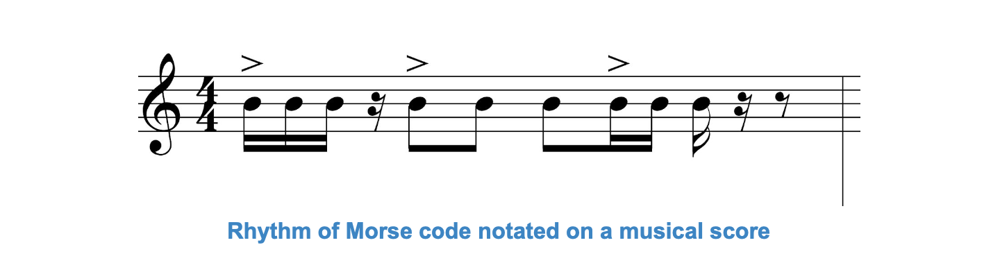
Figure 2. The Morse code notated on a musical score – dot, dot, dot, dash, dash, dash, dot, dot, dot
A guitar riff is a rhythm pattern of notes that repeats throughout a song, becoming a musical theme. The notes played in the riff have a repeated rhythm that fits within the meter.
Some rhythms are patterns of accented beats that are characteristic of a musical genre or the music of a certain culture.
Tempo is…
the speed of the beats in a musical piece, notated by how many beats there are in 1 minute
for example, 60 bpm means there are 60 beats per minute
Changing the Tempo without changing the meter or rhythm
changing the tempo means that the song is played faster or slower, but with
- the same number of beats per measure
- the same type of note getting one beat
- and the same accented beats
Tempo can be indicated…
numerically at the beginning of a musical score
- as a suggestion to the performer regarding how fast the piece should be performed
both manners of indicating tempo can be included, as shown below
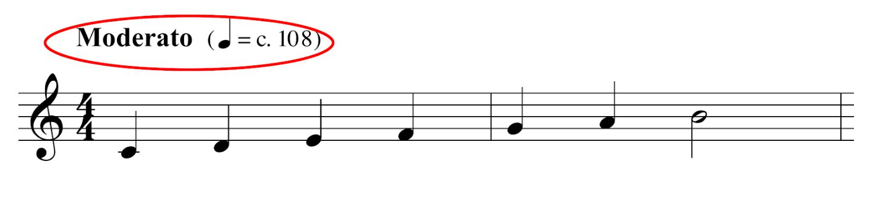
Musical score
Note lengths are relative to eachother
If a quarter note gets 1 beat…
- a half note gets 2 beats
- a whole note gets 4 beats
- an eighth note gets 1/2 beats
- a sixteenth note gets 1/4 beat
Difference between 2/4 and 4/4 time
- there are 2 beats to a measure,
- and a quarter note gets 1 beat
- there are 4 beats to a measure,
- and a quarter note gets 1 beat
- If a commonly repeated sequence of notes requires only 2 beats, then it makes sense to write the song in 2/4 time
- If the phrases or sequences require 4 beats, then it makes sense to write the song in 4/4 time
Accented beats
Which beat is accented
Accented beats are called strong beats
Unaccented beats are called weak beats
Detecting the meter of the song requires listening for…
- the grouping of beats
- determining which beat is accented
- the 1st beat in a measure is the accented one
- and the 3rd beat slightly accented, as shown in the figure below
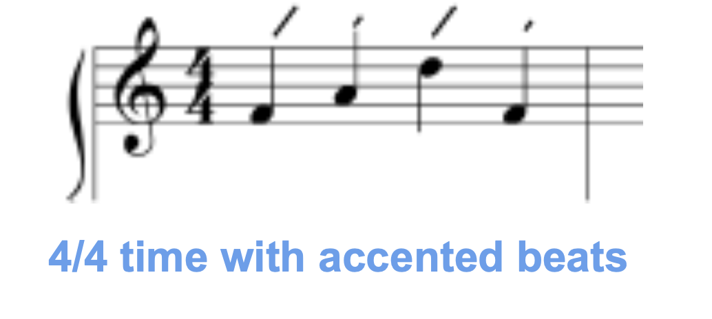
some rhythms are patterns of accented beats that are characteristic of a musical genre or the music of a certain culture
Difference between 3/4 and 6/8 time
the difference lies in the way eighth notes are grouped
there are 3 beats to a measure, and a quarter note gets 1 beat
- 3 quarter notes equal 6 eighth notes
- there are 2 eighth notes in 1 beat
- the eighth notes are in 3 groups of 2 notes each, as shown below
the 1st beat (eighth note) in the measure, with a lighter accent on the 3rd and 6th eighth notes
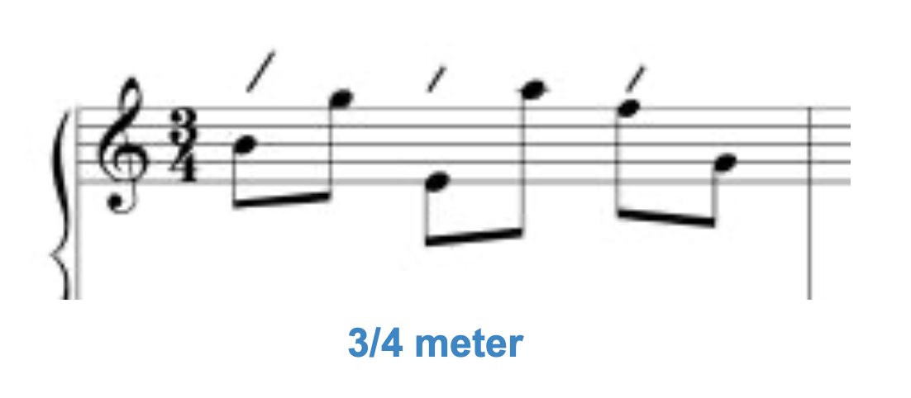
there are 6 beats to a measure, and an eighth note gets 1 beat
- 6 eighth notes equals 6 beats
- 3 quarter notes equals 6 beats
- eighth notes are in 2 groups of 3
falls on the 1st and 4th eighth notes, the second accent being lighter than the first
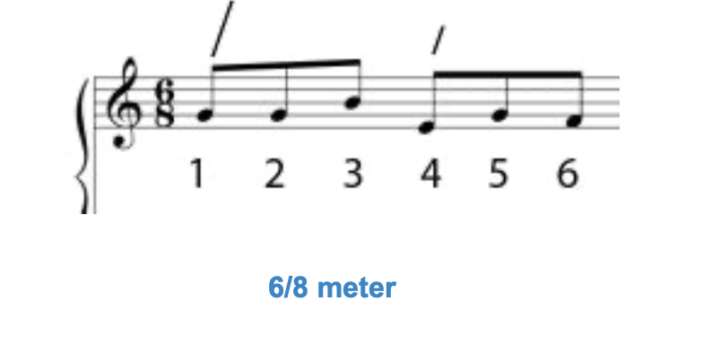
In conclusion…
When comparing a sequence of 6 eigth notes in 3/4 time and 6/8 time, the accents fall in different places.
For 3/4 time, the accents fall on the 1st, 3rd, and 5th eighth notes in a sequence of 6.
In 6/8 time they fall on the 1st and 4th eighth notes.
Part 2. Patterns and Form
Learning Objectives
Recognize a melody and be able to hum along with it.
Distinguish among monophonic, polyphonic, homophonic, and heterophonic music.
List the names and scale degrees of notes in a major diatonic scale.
Give examples of tendency notes and common melodic cadences and chord progressions.
Be able to give basic definitions of inversion, retrograde, or inverted retrograde as transformations of a melody.
Recognize a sequence in a melody.
Know the most common chord progressions in contemporary popular and jazz music, by chord numbers.
Know how the form of a song can be described by using capital letters A, B, C, ….
Know that AABA is referred to as song form, and what this means in terms of sections in the song’s structure.
Be able to hear and describe the form of simple songs.
Know that 8-bar and 12-bar sections are commonly used in contemporary pop music, jazz, and the blues.
Know that the I IV V I and vi ii V I chord progressions are commonly used in pop, blues, and jazz music.
Melody
1. Recognize a melody and be able to hum along with it.
2. Distinguish among monophonic, polyphonic, homophonic, and heterophonic music.
- a “rhythmic succession of single tones organized as an aesthetic whole”
- often thought of as the singable or hummable line of a song
Melodic Texture
the word “texture” is used to describe how melodies and harmonies are combined in a musical composition
- the simplest type of texture, which is a single melody in a piece of music
- could be a “tune” sung by a single person or played by a single instrument, or the melody could be played by multiple singers or instruments at the same time
- contains two or more melodic lines at the same time, four being the norm
- Johann Sebastian Bach
- composer during 1700s Baroque period of music
- his fugues and canons have multiple lines of melody that blend harmonically in intricate patterns
- uses simultaneous melodic variants of the same tune
- typical of Middle Eastern music
- in Persian art music, instrumentalists play variants of the singer’s lines
- standard in Western music and contemporary music
- consists of a melody with harmonic accompaniment
- for examplpe, the saxophone has the lead and is accompanied by other instruments
- occurs in music other than vocal music
Note Scale Degrees
Simple melodies
constructed primarily from the notes of the diatonic scale in the chosen key
building a musical composition on the diatonic scale is a way to help direct the motion of the melody and harmony
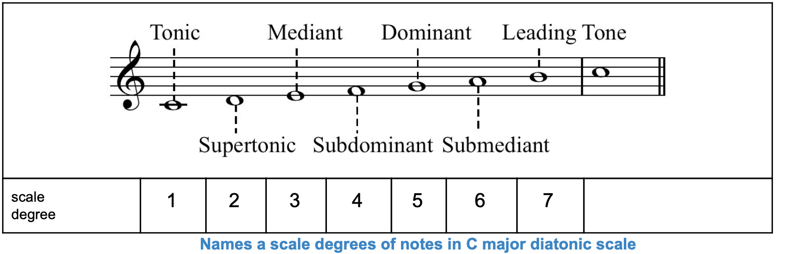
Figure 1. Names a scale degrees of notes in the key of C of a major diatonic scale
Diatonic Scale
building a musical composition on the diatonic scale is a way to help direct the motion of the melody and harmony; notes can be identified as scale degrees 1-7
- note that an octave above is also considered the tonic
- because it has such a strong pull toward the tonic
- dominant is an interval of a fifth from the tonic
- subdominant is an interval of a fifth below the tonic
- a semitone away from scale degree 3 (the mediant)
- mediant is halfway between the tonic and the dominant
- is a third above the tonic, and the submediant is a third below the tonic
- supertonic is directly above the tonic
- because it is pulled so strongly toward the note a semitone away
- leading tone is directly below the tonic
Example. scale up to scale degree 7 and stop in the key of C
that would be C, D, E, F, G, A, B
the movement from the leading tone to the tonic (B to C in the key of C) gives a perception of closure -- either stopping or pausingTendency Tones
Tendency Tones
certain tones in the diatonic scale that have a tendency to move to (or be followed by) certain other tones
this is the basis of what is called tonal music or tonality
tonal tendencies create points of tension and release as the music moves through time
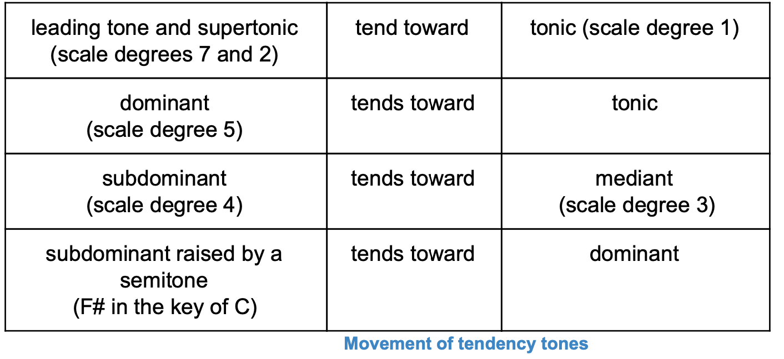
Figure 2. Movement of Tendency Tones
Scale degree 4 (subdominant) is a semitone away from scale degree 3 (mediant), “leaning into” the mediant; when a note is on the subdominant, it seems natural to move to the mediant
Exercise
Play C, D, E, and F
Then play C, D, E, F, and E
Does the second sequence sound more "finished" to you than the first?
Now raise scale degree 4 by a semitone, which in the key of C gives you an F#
This note is pulled strongly toward scale degree 5, which is G in the key of CMelodic Cadences
the feeling of finality or completion that comes from moving from one note to another is called melodic resolution (also called melodic cadence)
begins with the tonic moves away from the tonic and creates tension arrives either at the leading tone or at the submediant and resolves the tension by finally moving back to the tonic
to practice tonality, you should make your melody end either on the supertonic moving to the tonic, or on the leading tone moving to the tonic
In Conclusion,
notes in a major diatonic scale have names that relate to their positions in the scale and their tonal tendencies
example of a song ending on leading tone, tonic; the leading tone is an octave below scale degree 7, but it is still a leading tone: “Minuet in G” by Bach, ending in leading tone to tonic
a melody has a contour based on how the pitches go up and down
the contour of a melody arises in part from the conjunctive and disjunctive moves in a melody
conjunctive move is a step from one note to a neighboring note in the tonal collection
disjunctive move is a move from one note to a non-neighboring note
the greater the distance between one note and another, the more attention is called to that move
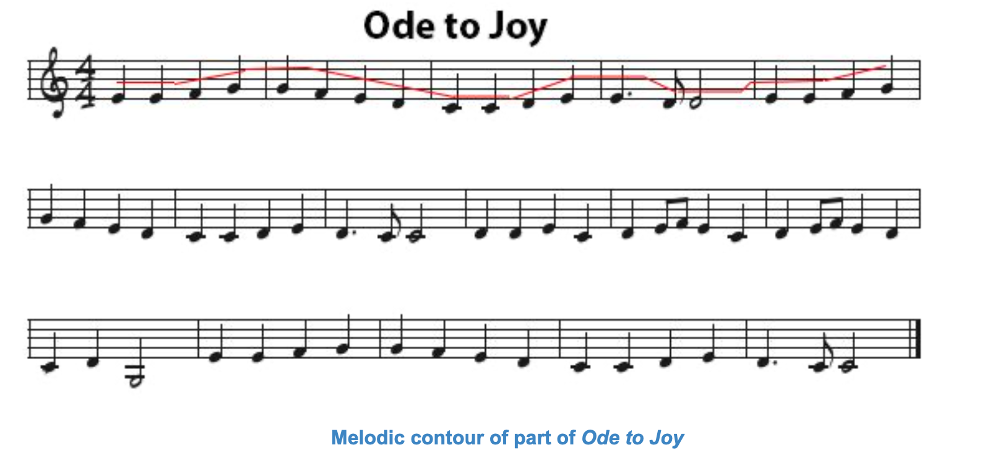
Figure 3. Tracing the melodic contour of Ode to Joy
in this piece, you can hear disjunctive moves and (mostly) conjunctive moves; the disjunctive moves tend to stand out more
Transformations and Sequences
Melody Transformations
Melodic Variations
to achieve a melodic variation, we use specific techniques, which work by a kind of algorithm, called melodic transformations
Melodic variation is a technique in which an existing melody or theme is repeated and embellished with one or more changes: changing the rhythm or harmony, or adding or changing existing material
Three types of melodic transformation:
ascending intervals are changed to descending ones and vice versa
also possible to have an approximate inversion, where the direction is inverted but not the exact number of steps
Figures below show an Exact Inversion
first, 2 measures of a melody are shown, with the semitone steps indicated in the table below it
then the inverted melody is shown, with the semitone steps in the table

Figure 5. Movement of original melody
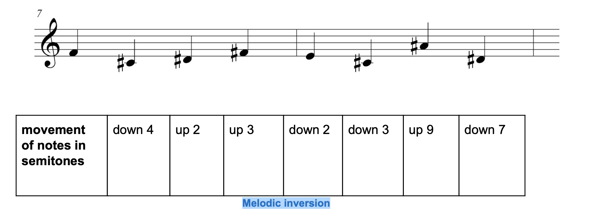
Figure 6. Melodic inversion
notes are played in reverse order
the inverted melody is played back in reverse order
one or more notes in a sequence are made longer or shorter in time
Melody Sequence
Segments of a Melody
patterns such as sequences and phrases are an important part of music
Sequence
a small melodic group of notes – as few as two – that can be used repeatedly in a melody, but at different pitch levels higher or lower than the original
repetitions of the sequence can have exactly the same contour as the original, or they can be varied slightly
Example. Contour of the melody helps to reveal that the following is a sequence
First 4 notes have a contour in the way they go up and down, and this contour is repeated at successively lower pitches in the second and third measures
These 4 notes constitute a sequence
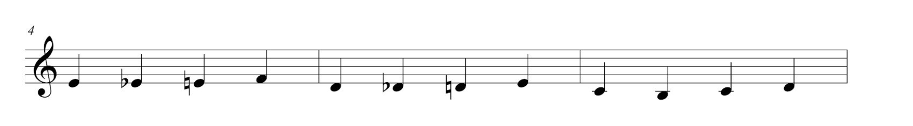
Figure 4. Sequence in Saint Saens “Aquarium”
Phrase
a phrase in music is a recognisable musical unit, generally ending in a cadence of some kind, and forming part of a period or sentence
phrasing in performance indicates the correct grouping of notes, whether as phrases in the technical sense or in smaller distinct units, corresponding to the various possible syntactical uses of punctuation
Example. Beethoven’s “Ode to Joy” is divided into 4 phrases, each 4 bars long
- serves as an antecedent
- doesn’t sound finished because it ends on a tendency note in the key of C – the note D
- D wants to move back to the tonic note C, and since the section ends on D, we feel “left hanging”
- does end on C (we’re home again)
- phrase 2 is the consequent of phrase 1
- different from Phrases 1 and 2
- repetition of the Phrase 2
- wrapping up this section
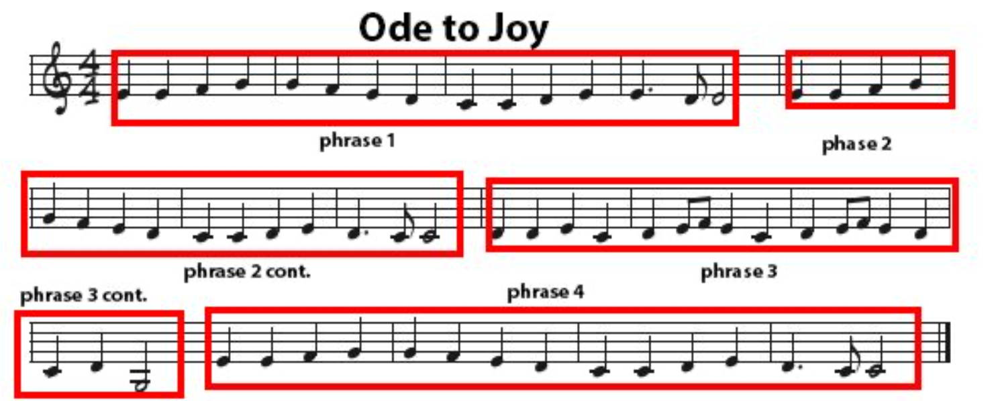
Figure 5. Phrases, antecedents, and consequent in Beethoven’s Ode to Joy
Common Chord Progressions
In modern music, a melody is generally accompanied by harmony in the form of chord progressions:
how chords are built
and the way in which chords have tendencies just like notes have tendencies in a melody
Harmony
a melody consists of single notes, one after another, movement that is shown in a horizontal direction on a musical score
Harmony…
involves 2 or more notes played at the same time, as in triad chords
appears vertically on a musical score, with notes stacked on top of each other to be played simultaneously
Tertian Harmony
Tertian chords…
created by playing notes separated by intervals of a third – usually 3 or 4
provide tertian harmony
examples of tertian chords (both “triad” and “tertian” have prefixes meaning “3”)
Functional Harmony
Functional harmony…
is the tendency for one chord to move to another one (also called tonal)
tonality applies to both melody and harmony:
like notes in a major diatonic scale, chords in a key have tendencies toward each otherAs described in the section on melody, tonality in music is based on the perception that certain notes pull naturally toward certain other notes
the note that pulls most strongly is the tonic note, where the song generally begins and ends the tonic note is the “home note”
chords are numbered according to their scale degree, but using Roman numerals
chords also have names derived from their bottom note – C major, D minor, E minor, etc
in a major diatonic scale, chords are named according to their tendencies relative to other chords
Chord names based on scale degree:
Chord I is the tonic
Chord II is the supertonic
Chord III is the mediant
Chord IV is the subdominant (also called the predominant)
Chord V is the dominant
Chord VI is the submediant
Chord VII is the leading chord
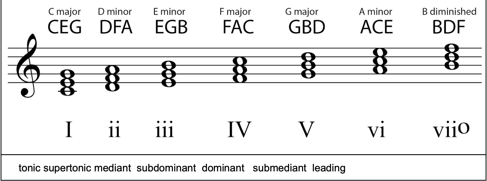
Figure 7. Triad chords in the key of C major, named and numbered
Note, in the tutorial’s first figure, we see notes in the C major diatonic scale numbered according to scale degree
The Dominant Seventh Chord
so far, we’ve looked at triads – chords with 3 notes
Four-note chords…
the dominant 7th is one of the most frequently used
most common in jazz and blues music
all dominant seventh chords contain 4 notes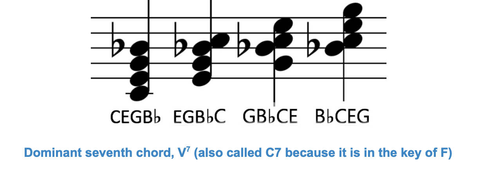
Figure 8. Dominant seventh chord
minor/major seventh
half-diminished seventh
fully diminished seventh
augmented major seventh
augmented seventh
Chord Cadences, Chord Progressions, and Harmonic Resolution
Returning to the concept of functional harmony…
A cadence…
is a melodic and/or harmonic progression that creates a sense of completion, called resolution
similar a comma or a period in a sentence
function can be to slow down a melody or section of music, end it, or prepare for a transition to more musical materialA melodic cadence…
A harmonic cadence
consists of at least 2 chords that bring a section of music to a close or a pause
can also be called a chord cadenceForm of a Song
Tonal Music
most of the discussion above has been based upon tonal music
In tonal music…
songs are written in a particular key that defines a tonal center, and tension is created and resolved as the melody or chords move away from and return to the tonal center
Atonality
Atonal music, on the other hand,
is purposely composed without a tonal center (no key)
this genre of music rose in prominence at the beginning of the 20th century with composers such as Arnold Schoenberg and Anton Webern
Form of a Musical Composition
Annotating musical compositions, the letter…
A stands for a cohesive phrase or phrases or longer segment of music–a section of a certain nature, determined primarily by the melodic and harmonic progression in that part
B stands for a contrasting cohesive phrase or phrases – a section or with a different melody or harmony. The bottom line for this section is for you to “hear” the changes in sections – like paragraphs in music
AABA Form
A common form for pop and jazz songs – actually known as song form – is AABA
this form consists of 4 sections, each 8 measures long
it can also be called the 32-bar form
AABA Example. “Deck the Halls” in the AABA form
A: Deck the halls with boughs of holly, fa la la la la la la la la
A: Tis the season to be jolly, fa la la la la la la la la
B. Don we now our gay apparel, fa la la la la la la la la
A: Troll the ancient yuletide carol, fa la la la la la la la la
There can be differences of opinion in analyzing the form of a song; some might say A and A’ are the same, which would make this form AABA; others might say the first and second phrases are different and call the form ABCB
overall idea is that phrases are not randomly different from each other
Simple Songs
Verse/Chorus Form
standard song form built around 2 repeating and alternating sections
form commonly consists of verse, chorus (with more verse/chorus pairs)
variation of the verse/chorus form is verse, chorus, verse, chorus, bridge, chorus
- usually all have the same melody
- but they have different lyrics from one verse to the next
- on the other hand, generally has the same words and music in each repetition
- contains the song’s melodic motifs and lyrical refrains
- usually the most memorable part of the song
- are a section of the song that provides a musical contrast to the rest
- may have a key, meter, or tempo change, or different chord progressions
To give the song coherence, the chorus returns to the original musical and lyrical themes at the end. Structure can get even more complicated, as in Coldplay’s song “Fix You” which contains verse-verse-chorus-verse-chorus-bridge-bridge-chorus
8-bar and 12-bar Sections
12-bar
The Blues form…
is another standard form of chord progression
uses 12-bar sections with a lot of repetition of chord progressions
relying heavily on the I IV V7 I chord progression
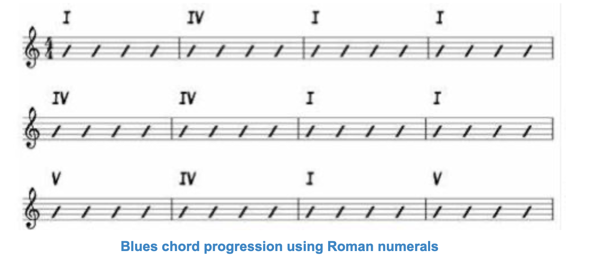
Figure 11. Blues chord progression using Roman numerals
Notated with lettered chord names rather than by Roman numerals
this type of chord notation is called a lead sheet
example is different from the previous one because second measure is a I chord rather than a IV
C chord (CEGB) and the F chord (FACE), as 4-note chords, have 2 common tones – C and E
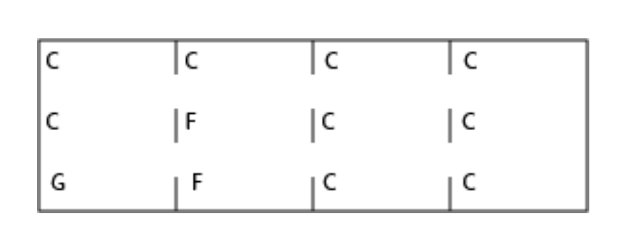
Figure 12. Lead sheet for a blues chord progression
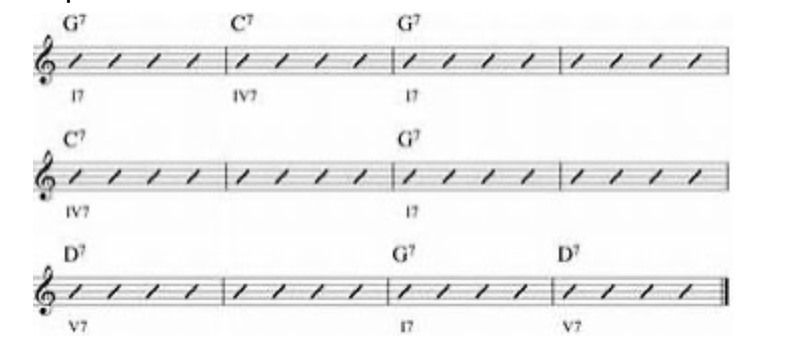
Figure 13. Lead sheet for a blues chord progression with all chords being dominant 7th chords
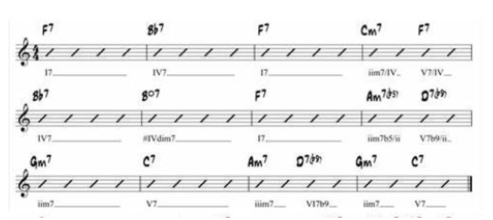
Figure 13b. Lead sheet symbols for blues chord progressions in the key of F with a few added chords for decoration
I IV V I Chord Progression
A sequence…
A sequence of more than two chords is called a chord progression
Common chord progression is I IV V Icommon in Classical music, contemporary popular music, and the blues
most contemporary popular music uses primarily the I IV V I progression
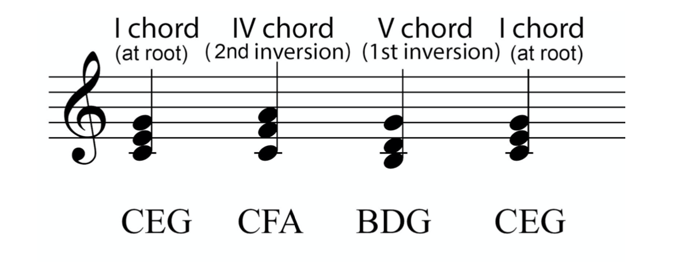
Figure 9. I IV V I chord progression
Why didn’t we put chords in root position, in which notes are a 3rd apart?
- want to have notes that are common between chords, and notes that move by only a step
- the way a note moves to the following note
- notice how the D goes up to the E and the B resolves to the C in the V-I progression as shown by the arrows
Chord Ladder
How chords relate to each other in a sequence that goes from a leading chord, through various types of musical tension, to resolution at the tonic:
Chords V and vii tend to be followed by I or vi
Chords ii and IV tend toward V or vii
Chord vi tends toward chords ii or IV
Chord iii tends toward vistart anywhere in the ladder and move down
or start on I, then move to anywhere in the ladder and go down from there
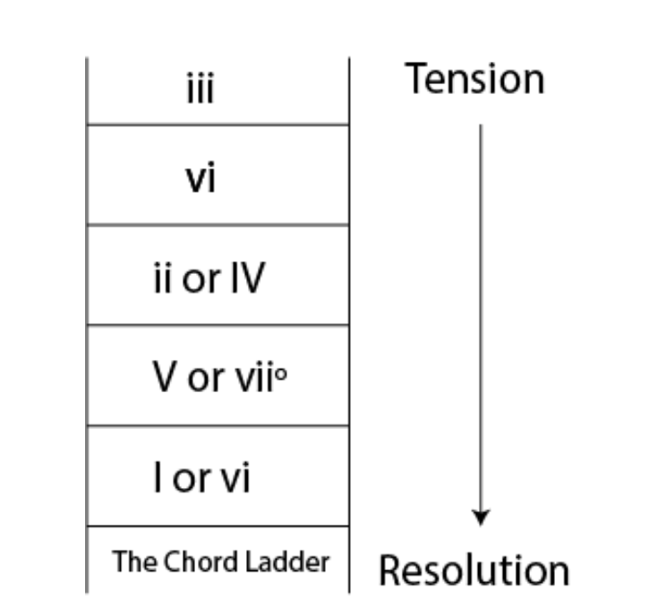
Figure 10. Chord Ladder showing common chord progressions moving through time
Chord progression I IV V I is in keeping with functional harmony
More chord progressions you can derive from the ladder are…
ii V I
vi ii V I
these are the most common chord progressions in jazz
- ii and IV, V and vii, and I and VI
- these pairs of chords can “substitute for” each other
- each of these pairs of chords have 2 common notes
- this gives them a similarity which makes them interchangeable
Not all popular chord progressions follow the Chord Ladder
Varying slightly is I V vi IV I
- a chord progression used by the Beatles “Let it Be”
- the root of each chord descends by a fifth
References
Burg Jennifer, Romney Jason, and Schwartz Eric. 2016. Digital Sound & Music: Concepts, Applications, and Science. Book. Franklin, Beedle & Associates Inc. http://digitalsoundandmusic.com.